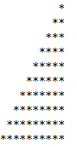

Punto 1
GithubRealizar la siguiente figura por medio del ciclo Para

package Taller3;
public class Punto1 {
static public Integer index , index1;
public static void main(String[] args) {
for (index = 0; index <= 10; index++){
for (index1 = 1; index1<= index; index1++){
System.out.print("*");
}
System.out.println("*");
}
System.exit(0);
}
}
Punto 2
Github
Realizar la siguiente figura por medio del ciclo Mientras - Hacer

package Taller3;
public class punto2 {
static public Integer index , index1;
public static void main(String[] args) {
index = 1;
while(index <= 10){
index1 = 1;
while(index1 <= 10){
if(index1 > (10 - index)){
System.out.print("*");
}else {
System.out.print(" ");
}
if(index1 == 10){
System.out.println(" ");
}
index1 = index1 + 1;
}
index = index + 1;
}
System.exit(0);
}
}
Punto 3
Github
Realizar un programa en el cual se solicite la edad de una persona. Si
la persona es mayor o igual a 18 años, deberá mostrar en pantalla:
Usted es mayor de edad.
package Taller3;
public class punto3 {
static public int n;
public static void main(String[] args) {
n = 9;
n = n*2-1;
for(int i = 1; i <=n; i+=2){
for (int j = 1; j <= n-i; j+=2){
System.out.print(" ");
}
for(int k=1; k <=i; k++){
System.out.print("*");
}
System.out.println();
}
for (int i=1; i<=4; i++){
System.out.println(" *****");
}
System.exit(0);
}
}
Punto 4
Github
Se requiere un programa que pueda crear la tabla de multiplicar del número que el usuario indique por
medio del ciclo Para; esta debe ser impresa del 1 al 10. Ejemplo, si el usuario indica que desea crear
la tabla del 5, entonces el resultado debería ser el siguiente:
1 x 5 = 5
2 x 5 = 10
3 x 5 = 15
4 x 5 = 20
5 x 5 = 25
6 x 5 = 30
7 x 5 = 35
8 x 5 = 40
9 x 5 = 45
10 x 5 = 50
package Taller3;
import java.util.Scanner;
public class Punto4 {
public static Integer multiplicar, resultado;
private static final Scanner input = new Scanner(System.in);
public static void main(String[] args) {
System.out.print("Escriba el numero de la tabla de multiplicar que quieres conocer: ");
multiplicar = input.nextInt();
for(int i =1; i <= 10 ; i++){
resultado = multiplicar * i;
System.out.println(multiplicar + " x " + i + " = " + resultado);
}
input.close();
System.exit(0);
}
}
Punto 5
Github
Utilizando el ciclo que usted desee, crear un menú de ejecución infinita hasta que el usuario desee terminar dicho ciclo.
Menu de usuario
1. Captura nombre
2. Saludar persona
3. Salir del sistema
package Taller3;
import java.util.Scanner;
public class Punto5 {
public static String nombre1;
public static Boolean continuar;
public static Integer menu;
private static final Scanner input = new Scanner(System.in);
public static void main(String[] args) {
continuar = true;
nombre1 = "";
do {
menu = menuPrincipal();
if(menu == 1){
nombre1 = pedirNombre();
}else if (menu == 2){
if(nombre1.equals("")){
System.out.println("CAPTURE PRIMERO SU NOMBRE");
}else {
System.out.println("HOLA " + nombre1 + " ten un buen dia");
}
}else if (menu == 3){
System.out.println("DESCONECTADO");
continuar = false;
}else {
System.out.println("NO VALIDO");
}
}while(continuar);
input.close();
System.exit(0);
}
private static Integer menuPrincipal(){
System.out.println("ELIGE QUE DESEAS EJECUTAR");
System.out.println("1. Capturar tu nombre");
System.out.println("2. Saludar persona");
System.out.println("3. Salir de sistema");
return input.nextInt();
}
private static String pedirNombre(){
System.out.print("ESCRIBE TU NOMBRE: ");
input.nextLine();
return input.nextLine();
}
}
Punto 6
GithubSe está creando una aplicación que va a estar conectada con un prototipo que permita almacenar contactos telefónicos en el dispositivo. Para ello cada contacto debe contener nombre completo, teléfono y organización. Se requiere que la aplicación permita añadir 3 contactos verificando que el número no esté almacenado, buscar contactos almacenados y eliminar contactos si el usuario lo requiere. Recuerde que el sistema debe terminar cuando el usuario así lo indique.
package Taller3;
import java.util.Scanner;
public class Punto6 {
static public Integer contacto,guardado1, guardado2, guardado3,accion;
static public String nombre, nombreG1, nombreG2, nombreG3 ,organizacionG1, organizacionG2, organizacionG3;
static public boolean continuar;
private static final Scanner input = new Scanner(System.in);
private static final Scanner string = new Scanner(System.in);
public static void main(String[] args) {
continuar = true;
guardado1 = 0;
guardado2 = 0;
guardado3 = 0;
nombreG1 = "";
nombreG2 = "";
nombreG3 = "";
organizacionG1 = "";
organizacionG2 = "";
organizacionG3 = "";
do {
accion = menuPrincipal();
switch (accion){
case 1:
if(guardado1 != 0 && guardado2 != 0 && guardado3 != 0){
System.out.println("AGENDA LLENA, PORFAVOR ELIMINE CONTACTOS");
}else {
contacto = pedirNumero();
if(contacto.equals(guardado1) ||contacto.equals(guardado2) ||contacto.equals(guardado3)){
System.out.println("EL NUMERO YA EXISTE");
}else {
if(guardado1 == 0){
guardado1 = contacto;
nombreG1 = pedirEscrito("CONTACTO");
organizacionG1 = pedirEscrito("EMPRESA");
}else {
if(guardado2 == 0){
nombreG2 = pedirEscrito("CONTACTO");
guardado2 = contacto;
organizacionG2 = pedirEscrito("EMPRESA");
}else {
if(guardado3 == 0){
nombreG3 = pedirEscrito("CONTACTO");
guardado3 = contacto;
organizacionG3 = pedirEscrito("EMPRESA");
}
}
}
}
}
break;
case 2:
nombre = pedirEscrito("CONTACTO");
if(nombre.equals(nombreG1)){
mostrarContactos(nombreG1,guardado1,organizacionG1);
}else if(nombre.equals(nombreG2)){
mostrarContactos(nombreG2,guardado2,organizacionG2);
}else if(nombre.equals(nombreG3)){
mostrarContactos(nombreG3,guardado3,organizacionG3);
}else {
System.out.println("CONTACTO NO REGISTRA EN LA AGENDA");
}
break;
case 3:
nombre = pedirEscrito("CONTACTO");
if(nombre.equals(nombreG1)){
System.out.println(nombre + " SE ELIMINÓ");
nombreG1 = "";
guardado1 = 0;
organizacionG1 = "";
}else if(nombre.equals(nombreG2)){
System.out.println(nombre + " SE ELIMINÓ");
nombreG2 = "";
guardado2 = 0;
organizacionG2 = "";
}else if(nombre.equals(nombreG3)){
System.out.println(nombre + " SE ELIMINÓ");
nombreG3 = "";
guardado3 = 0;
organizacionG3 = "";
}else {
System.out.println("CONTACTO NO REGISTRA EN LA AGENDA");
}
break;
case 4:
System.out.println("DESCONECTADO DEL SISTEMA");
continuar = false;
default:
System.out.println("ACCION NO VALIDA");
}
}while(continuar);
string.close();
input.close();
System.exit(0);
}
private static Integer menuPrincipal(){
System.out.println("QUE FUNCION DESEAS HACER EN SU AGENDA");
System.out.println("1. Agregar Nuevo contacto, MAXIMO: 3 CONTACTOS");
System.out.println("2. Buscar Contacto");
System.out.println("3. Eliminar contactos");
System.out.println("4. Salir del sistema");
return input.nextInt();
}
private static Integer pedirNumero(){
System.out.println("DIGITE NUMERO DE TELEFONO");
return string.nextInt();
}
private static String pedirEscrito(String tipo){
System.out.println("ESCRIBA EL NOMBRE DE " );
return string.next();
}
private static void mostrarContactos(String name, Integer number, String company){
System.out.println("Nombre: " + name);
System.out.println("Numero: " + number);
System.out.println("Empresa: " + company);
}
}
Punto 7
GithubEl parqueadero "El guardián" presta sus servicios de parqueadero nocturno para los usuarios del barrio y requiere una aplicación que permita registrar los vehículos que se cuidan en estas instalaciones. Se sugiere que el parqueadero tenga los atributos del vehículo como son, placa y marca, y los datos del cliente como son nombre completo y número de teléfono. Para cada vehículo se debe permitir la opción de ingresar al parqueadero, retirar del parqueadero y consultar si un vehículo se encuentra en el parqueadero. Recuerde que el sistema debe terminar cuando el usuario así lo indique. Tenga en presente que el parqueadero solo puede almacenar máximo 5 vehículos.
package Taller3;
import java.util.Scanner;
public class Punto7 {
static public String[] nombre = new String[5];
static public String buscador;
static public String[] placa = new String[5];
static public String[] marca = new String[5];
static public int[] telefono = new int[5];
static public int[] lugar = new int[5];
static public int eleccion , contador;
static public boolean continuar;
private static final Scanner input = new Scanner(System.in);
private static final Scanner string = new Scanner(System.in);
public static void main(String[] args) {
continuar = true;
contador = 0;
//inicializar valores en posiciones
for(int i = 0; i <=4 ;i++){
nombre[i] = "NO ASIGNADO";
telefono[i] = 0;
placa[i] = "VACIO";
marca[i] = "VACIO";
lugar[i] = 0;
}
do{
eleccion = menuPrincipal();
switch (eleccion){
case 1:
if(lugar[0] == 1 && lugar[1] == 1 && lugar[2] == 1 && lugar[3] == 1 && lugar[4] == 1){
System.out.println("PARQUEADERO LLENO, NO TENEMOS MAS LUGARES");
}else{
for(int j = 0; j <= 4 ; j++){
lugarParqueo(lugar[j], j+1);
}
System.out.println("DONDE DESEAS GUARDAR TU VEHICULO?");
eleccion = input.nextInt();
if(lugar[eleccion-1] == 0){
nombre[eleccion - 1] = pedirEscrito("NOMBRE");
placa[eleccion - 1] = pedirEscrito("PLACA");
marca[eleccion - 1] = pedirEscrito("MARCA");
telefono[eleccion - 1] = pedirNumero();
lugar[eleccion - 1] = 1;
}else {
System.out.println("LUGAR OCUPADO");
}
}
break;
case 2:
System.out.println("PARQUEADERO: ");
for (int k = 0 ; k <=4; k++){
carrosParqueados(lugar[k],k+1,nombre[k],placa[k],marca[k]);
}
System.out.println("ESCOGE TU VEHICULO");
eleccion = input.nextInt();
if(lugar[eleccion - 1] == 1){
System.out.println("Tu carro: " + marca[eleccion - 1] + " se ha retirado");
nombre[eleccion - 1] = "NO ASIGNADO";
placa[eleccion - 1] = "VACIO";
marca[eleccion - 1] = "VACIO";
telefono[eleccion - 1] = 0;
lugar[eleccion - 1] = 0;
}else {
System.out.println("AQUI NO HAY VEHICULO");
}
break;
case 3:
System.out.println("DIGITE SU PLACA A BUSCAR");
buscador = string.nextLine();
for(int i = 0; i<=4 ; i++){
if(buscador.equals(placa[i])){
System.out.println("TU VEHICULO: " + marca[i] + " placas: " + placa[i] + " se encuentra en el almacen");
}else if(contador == 4){
System.out.println("PLACA NO ENCONTRADA");
contador = 0;
}else {
contador = contador +1;
}
}
break;
case 4:
System.out.println("DESCONECTADO DEL SISTEMA");
continuar = false;
}
}while(continuar);
string.close();
input.close();
}
private static int menuPrincipal(){
System.out.println("Bienvenido a El parquedero EL GUARDIAN");
System.out.println("QUE SERVICIO DESEAS REALIZAR");
System.out.println("1. Ingresar un vehiculo");
System.out.println("2. Retirar un vehiculo");
System.out.println("3. Consultar su vehiculo");
System.out.println("4. Salir del sistema");
return input.nextInt();
}
private static String pedirEscrito(String tipo){
System.out.println("DIGITE SU: " + tipo + ": ");
return string.nextLine();
}
private static int pedirNumero(){
System.out.println("Digite su numero de telefono: ");
return input.nextInt();
}
private static void lugarParqueo(int posicion, int lugar){
if(posicion == 0){
System.out.println("LUGAR DISPONIBLE: " + lugar);
}
}
private static void carrosParqueados(int posicion, int lugar, String name, String matricula,String tipo){
if(posicion == 1){
System.out.println(lugar+ ". " + " Vehiculo" + " De: " + name + " placas: " + matricula + " y marca: " + tipo);
}else {
System.out.println("VACIO");
}
}
}
Punto 8
GithubLa escuela automovilística "El Maestro" requiere una aplicación que permita registrar a sus clientes en los cursos de enseñanza automovilística y establecer quienes lo han aprobado para continuar con el trámite de adquirir la licencia de conducción. Para cada usuario se debe permitir registrar su ingreso al curso, consultar usuarios que hayan presentado el curso y resultados de la prueba del curso (si fueron aprobados o no). Recuerde que el sistema debe terminar cuando el usuario así lo indique. Tenga presente que la escuela tiene capacidad máxima de gestionar 8 usuarios en su totalidad.
package Taller3;
import java.util.Arrays;
import java.util.Scanner;
public class Punto8 {
public static String curso;
public static String[] user = new String[8];
public static int eleccion;
public static boolean continuar;
private static final Scanner string = new Scanner(System.in);
private static final Scanner input = new Scanner(System.in);
public static void main(String[] args) {
continuar = true;
curso = "ENSEÑANZA AUTOMOVILISTICA";
Arrays.fill(user, "NO REGISTRADO");
do {
eleccion = menuPrincipal();
switch (eleccion){
case 1:
if(user[0].equals("NO REGISTRADO")){
user[0] = capturarUsuario();
}else if(user[1].equals("NO REGISTRADO")){
user[1] = capturarUsuario();
}else if(user[2].equals("NO REGISTRADO")){
user[2] = capturarUsuario();
}else if(user[3].equals("NO REGISTRADO")){
user[3] = capturarUsuario();
}else if(user[4].equals("NO REGISTRADO")){
user[4] = capturarUsuario();
}else if(user[5].equals("NO REGISTRADO")){
user[5] = capturarUsuario();
}else if(user[6].equals("NO REGISTRADO")){
user[6] = capturarUsuario();
}else if(user[7].equals("NO REGISTRADO")){
user[7] = capturarUsuario();
}else {
System.out.println("CURSO LLENO, NO PUEDES INSCRIBIR MAS ESTUDIANTES");
}
break;
case 2:
System.out.println("LOS SIGUIENTES USUARIOS ESTAN REGISTRADO EN EL CURSO: " + curso);
for (String s : user) {
mostrarRegistro(s);
}
break;
case 3:
System.out.println("LOS SIGUIENTES ESTUDIANTES HAN APROBADO EL CURSO");
for(int j = 0; j < user.length; j++){
if(j == 2 || j == 1 || j == 4 || j == 6){
mostrarAprovados(user[j]);
}
}
break;
case 4:
System.out.println("DESCONECTADO DEL SISTEMA");
continuar = false;
break;
default:
System.out.println("ACCION NO VALIDA , INTENTE NUEVAMENTE");
}
}while(continuar);
input.close();
string.close();
System.exit(0);
}
private static int menuPrincipal(){
System.out.println("Bienvenido al sistema de la Escuela Automovilistica EL MAESTRO");
System.out.println("Menú");
System.out.println("1. REGISTRAR INGRESO AL CURSO");
System.out.println("2. Consultar usuarios En Curso");
System.out.println("3. Consultar aprobados");
System.out.println("4. Salir del sistema");
return input.nextInt();
}
private static String capturarUsuario(){
System.out.println("ESCRIBA EL NOMBRE COMPLETO DEL USUARIO A REGISTRAR");
return string.nextLine();
}
private static void mostrarRegistro(String usuario){
if(!usuario.equals("NO REGISTRADO")){
System.out.println(usuario);
}
}
private static void mostrarAprovados(String usuario){
if(!usuario.equals("NO REGISTRADO")){
System.out.println(usuario);
}
}
}